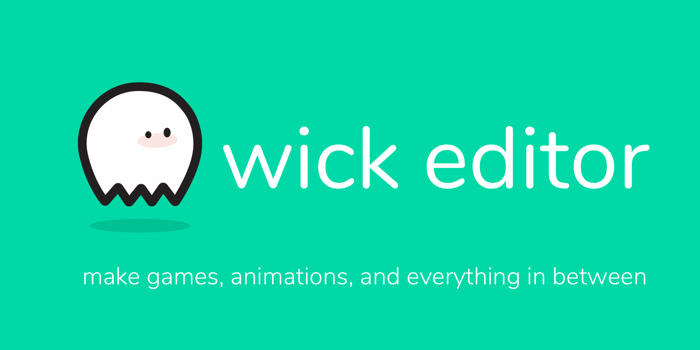

The Wick Editor works best with
Firefox
and
Chrome
.
Try the new Wick Editor 1.0 at alpha.wickeditor.com!

What's Wick?
Live: Wick Editor 0.15.2
Last updated June 26 2018
Test: Wick Editor 1.0.5a
Last updated Mar 27 2019